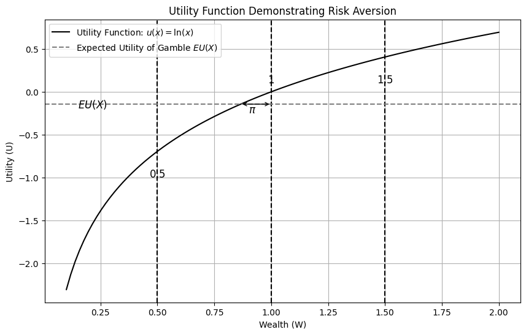
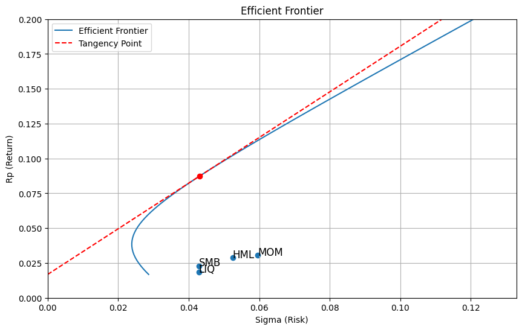

Skriv en rapport om en aksje, fond eller strategi på TITLON, og argumenter for hvorfor dette er en bra investeringscase
I rapporten skal du bruke:
Teori om forventning, nytte og risiko
Porteføljeteori
Faktorer
Value At Risk
Det første dere begynner med, er å finne caset deres. Det trengs det ingen forkunskap til
Det er veldig lurt å jobbe med temaet som vi har gått gjennom på forelesning, etter gjeldende forelesning.
I denne forelesningen
Korte om kursets tema: * Forelesning 2: Forventning, nytte og risiko * Forelesning 3: Porteføljeteori og matriser * Forelesning 4: Faktorer * Forelesning 5: Value at Risk (VaR)
Forelesning 2: Forventning, nytte og risiko
Nyttefunksjonen:
import numpy as npimport matplotlib.pyplot as plt# Logarithmic utility functiondef u_func(x):return np.log(x)def x_func(u):return np.exp(u)# Values for wealth and utilityx_vals = np.linspace(0.1, 2, 100)u_x = u_func(x_vals)# Gamble outcomesx_gamble = [0.5, 1.5] # Outcomes of the gamblep_gamble = [0.5, 0.5] # Probabilities# Certain outcomex_certain =1# Expected utility of the gambleexpected_utility = np.sum(np.array(p_gamble) * u_func(np.array(x_gamble)))# Plotting the utility functionplt.figure(figsize=(10, 6))plt.plot(x_vals, u_x, label=r'Utility Function: $u(x) = \ln(x)$', color='black')# Plotting the certain outcomeplt.axvline(x=x_certain, color='black', linestyle='--')plt.text(x_certain, u_func(x_certain) +0.1, "$1$", horizontalalignment='center', fontsize=12)# Plotting the gamble outcomesplt.axvline(x=x_gamble[0], color='black', linestyle='--')plt.axvline(x=x_gamble[1], color='black', linestyle='--')plt.text(x_gamble[0], u_func(x_gamble[0]) -0.3, "$0.5$", horizontalalignment='center', fontsize=12)plt.text(x_gamble[1], u_func(x_gamble[1]) -0.3, "$1.5$", horizontalalignment='center', fontsize=12)# Plotting the expected utilityplt.axhline(y=expected_utility, color='gray', linestyle='--', label='Expected Utility of Gamble $EU(X)$')plt.text(0.15, expected_utility, '$EU(X)$', verticalalignment='center', fontsize=12)# Risk premium - distance between expected utility and utility of certain outcomerisk_premium = u_func(x_certain) - expected_utilitycertainty_equivalence = x_func(expected_utility)plt.annotate('', xy=(1, expected_utility), xytext=(certainty_equivalence, expected_utility), arrowprops=dict(facecolor='black', arrowstyle='<->'))# Separate annotation for the label (π) without the arrowplt.annotate(r'$\pi$', xy=(0.9, expected_utility -0.1), fontsize=12)# Labels and titleplt.title('Utility Function Demonstrating Risk Aversion')plt.xlabel('Wealth (W)')plt.ylabel('Utility (U)')plt.legend()plt.grid(True)

Forelesning 3: Porteføljeteori og matriser
Her bruker vi titlondatabasen:
from IPython.display import IFrame# Embed the web page using an iframeIFrame("https://titlon.uit.no/", width=700, height=200)
Vi bruker scriptmuligheten i Titlon for å hente data
import pandas as pd#Query script for Microsoft SQL Server (MSSQL) clientimport pymssqlcon = pymssql.connect(host='titlon.uit.no', user="esi000@uit.no", password="VhWRI4OXiUE$xqic&!0AJ", database='OSE') crsr=con.cursor()crsr.execute(""" SELECT * FROM [OSE].[dbo].[equity] WHERE year([Date]) >= 2016 ORDER BY [Name],[Date]""")r=crsr.fetchall()df=pd.DataFrame(list(r), columns=[i[0] for i in crsr.description])df#YOU NEED TO BE CONNECTED TO YOUR INSTITUTION VIA VPN, OR BE AT THE INSTITUTION, FOR THIS CODE TO WORK
---------------------------------------------------------------------------ModuleNotFoundError Traceback (most recent call last)
Input In [4], in <cell line: 3>() 1importpandasaspd 2#Query script for Microsoft SQL Server (MSSQL) client----> 3importpymssql 4 con = pymssql.connect(host='titlon.uit.no',
5 user="esi000@uit.no",
6 password="VhWRI4OXiUE$xqic&!0AJ",
7 database='OSE')
8 crsr=con.cursor()
ModuleNotFoundError: No module named 'pymssql'
Porteføljefronten
import functionsimport pandasimport decompositionimport numpy as npimport pandas as pdimport matplotlib.pyplot as pltMAX_AXIS =0.2df = pd.read_pickle('output/output.df')# Defining risk free, cov matrix and mean vectorrf = np.exp(0.2/12)-1#df['NOWA_DayLnrate'].mean()cov_matrix, means, df_month = functions.calc_moments(df)R = decomposition.get_independent_portfolios(cov_matrix, 0.00001)cov_matrix = R.T @ cov_matrix @ Rmeans = R.T @ means# Create a vector of ones with the same length as the number of columns in the covariance matrixones = np.ones(cov_matrix.shape[0])# Some useful scalar valuesA = np.dot(ones.T, np.dot(np.linalg.inv(cov_matrix), ones))B = np.dot(ones.T, np.dot(np.linalg.inv(cov_matrix), means-rf))C = np.dot(means.T-rf, np.dot(np.linalg.inv(cov_matrix), means-rf))#Creating plotfig, ax = plt.subplots(figsize=(10, 6))# Setting the range of rp values and sigma valuesrp_values = np.linspace(0, MAX_AXIS, 100)# Calculate and plot sigma values for each rpsigma_values =1/A + ((rp_values -abs(B)/A)**2) / (C - B**2/A)ax.plot(sigma_values**0.5, rp_values+rf, label='Efficient Frontier')# Calculate the tangency point and tangenttangency_rp = C/abs(B)tangency_sigma =1/A + ((tangency_rp -abs(B)/A)**2) / (C - B**2/A)ax.plot(tangency_sigma**0.5, tangency_rp + rf, 'ro')sigma_range = np.linspace(0, np.max(sigma_values**0.5), 100)ax.plot(sigma_range, rf + sigma_range*tangency_rp/tangency_sigma**0.5, color='r', linestyle='--', label='Tangency Point')ax.set_xlim([0, np.max(sigma_values**0.5)])ax.set_ylim([0, np.max(rp_values)])ax.set_xlabel('Sigma (Risk)')ax.set_ylabel('Rp (Return)')ax.set_title('Efficient Frontier')ax.grid(True)ax.legend()
import pandas as pd#Query script for Microsoft SQL Server (MSSQL) clientimport pymssqlcon = pymssql.connect(host='titlon.uit.no', user="esi000@uit.no", password="ShidLZigibdq7NttTiiOl", database='OSE') crsr=con.cursor()crsr.execute(""" SELECT [Date],[SMB],[HML],[LIQ],[MOM] FROM [OSE].[dbo].[factors] where year([Date]) >= 2016""")r=crsr.fetchall()df_factors = pd.DataFrame(list(r), columns=[i[0] for i in crsr.description])df_factors['Date'] = pd.to_datetime(df_factors['Date'])df_factors.set_index('Date', inplace=True)df_factors = df_factors.resample('ME').sum()df_factors = df_factors.dropna()factor_summary = pd.DataFrame({'mean': rf + df_factors[['SMB','HML', 'LIQ', 'MOM']].mean(),'std': df_factors[['SMB','HML', 'LIQ', 'MOM']].std()})factor_summary
---------------------------------------------------------------------------ModuleNotFoundError Traceback (most recent call last)
Input In [2], in <cell line: 3>() 1importpandasaspd 2#Query script for Microsoft SQL Server (MSSQL) client----> 3importpymssql 4 con = pymssql.connect(host='titlon.uit.no',
5 user="esi000@uit.no",
6 password="ShidLZigibdq7NttTiiOl",
7 database='OSE')
8 crsr=con.cursor()
ModuleNotFoundError: No module named 'pymssql'
ax.scatter(factor_summary['std'], factor_summary['mean'])for i, label inenumerate(factor_summary.index): ax.annotate(label, (factor_summary['std'][i], factor_summary['mean'][i]), fontsize=12)fig
C:\Users\esi000\AppData\Local\Temp\ipykernel_1956\1822984905.py:3: FutureWarning: Series.__getitem__ treating keys as positions is deprecated. In a future version, integer keys will always be treated as labels (consistent with DataFrame behavior). To access a value by position, use `ser.iloc[pos]`
ax.annotate(label, (factor_summary['std'][i], factor_summary['mean'][i]), fontsize=12)

Forelesning 5: VaR
from datetime import datetimeimport matplotlib.pyplot as pltimport numpy as npimport pandas as pdimport VaR as varSUBTRACT_MEAN =Falsedf = pd.concat((pd.read_excel("data/dateReturns.xlsx", header=None, names=['date']), pd.read_excel("data/Returns.xlsx",header=None, names=['return'])), axis=1)estimation_win_size =250win_start =min(df[df['date']>='1995-1-1'].index)win_start =min(df[df['date']>='1995-12-29'].index)def normal_est(x,z,p,s): sigma = np.std(x, ddof=1)return- z[0]*sigma, - z[1]*sigma, sigmanormal95, normal99, sigma, dates, ret = var.est_var(normal_est, SUBTRACT_MEAN, win_start, df, estimation_win_size)var.plot(plt, normal95, normal99, dates,'VaR Estimation Using the Normal Distribution Method')